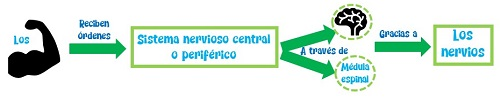
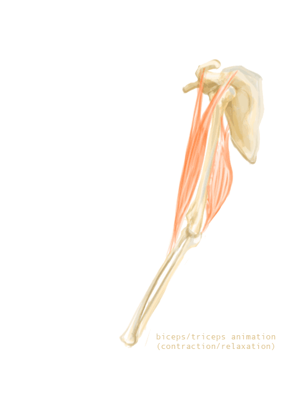
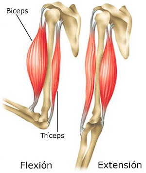

Los músculos reciben órdenes del sistema nervioso central o periférico, a través del cerebro y la médula espinal, gracias a los nervios.
Cuando un músculo recibe esa orden se pone en acción, realizando el movimiento necesario para responder a los estímulos recibidos.
A continuación, puedes ver un esquema de lo explicado anteriormente.

Los músculos que están dispuestos de manera enfrentada en el cuerpo (como el bíceps y el tríceps), cada uno de ellos realiza un movimiento contrario al otro. Uno se contrae y el otro se relaja.
Los músculos que realizan los movimientos contrarios, se denominan músculos agonistas y músculos antagonistas.
- Los músculos agonistas son los que se contraen para realizar la fuerza necesaria y realizar la acción.
- Los músculos antagonistas son los que se relajan, realizando la acción contraria, para facilitar el movimiento del músculo agonista.
Por ejemplo, cuando levantas la bolsa de la compra, el bíceps se contrae (músculo agonista) y el tríceps se relaja (músculo antagonista).
A continuación, puedes ver una animación del bíceps (músculo agonista) y el tríceps (músculo antagonista) en la acción que acabas de leer. Como puedes observar, cuando el bíceps se contrae, el tríceps se relaja y viceversa.

Esta acción ocurre en los músculos que están colocados en el cuerpo humano de manera opuesta.
A continuación, puedes ver una imagen del bíceps y tríceps, actuando como músculos agonista y antagonista.

Las acciones que podemos encontrarnos son:
|
Movimientos del músculo agonista |
Movimientos del músculo antagonista |
| Flexión: doblar el brazo | Extensión: extender el brazo |
| Abducción: abrir lateralmente una pierna hacia fuera | Aducción: cerrar lateralmente una pierna hacia dentro |
| Pronación: girar la palma de la mano hacia arriba | Supinación: girar la palma de la mano hacia abajo |
| Rotación interna: girar hacia dentro el brazo | Rotación externa: girar hacia fuera el brazo |